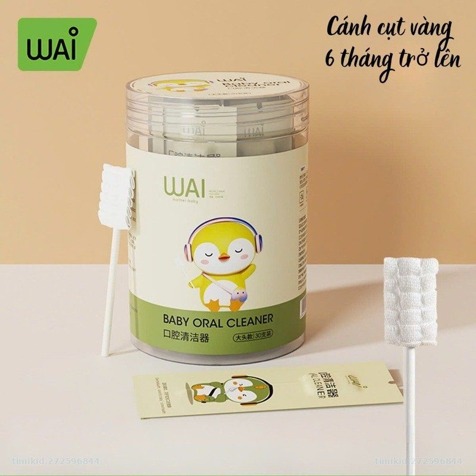

Thương hiệu mẹ & béChăm sóc dịu nhẹ
Chăm sóc dịu nhẹ
cho bé từ ngày đầu
Wai mang đến sản phẩm vệ sinh và chăm sóc mẹ – bé an toàn, tiện lợi, giá hợp lý. Chúng tôi đang tìm kiếm đại lý & shop mẹ bé đồng hành trên toàn quốc.

Dòng sản phẩm Wai
Vì sao chọn Wai?
🛡️
An toàn cho bé
Chất liệu bông tự nhiên, khử khuẩn, không BPA.
⭐
Được mẹ tin dùng
Hơn 12.000 sản phẩm đã đến tay các gia đình Việt.
📦
Hàng sẵn kho
Nguồn hàng ổn định, giao nhanh cho đại lý.
🤝
Hỗ trợ đại lý
Chiết khấu tốt, kèm ảnh & video bán hàng.